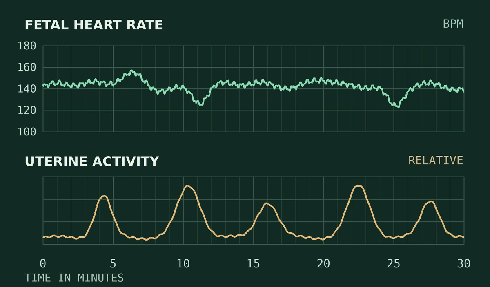

Can CTG predict low arterial pH?
What we tested on 441 recordings, how the models performed, and what we’ll measure in an offline CTG app using Decider and conventional ML.
Read the CTG study
Experiments in machine learning for bioscience, starting with physiological signals recorded during labor.
What we tested on 441 recordings, how the models performed, and what we’ll measure in an offline CTG app using Decider and conventional ML.
Read the CTG study